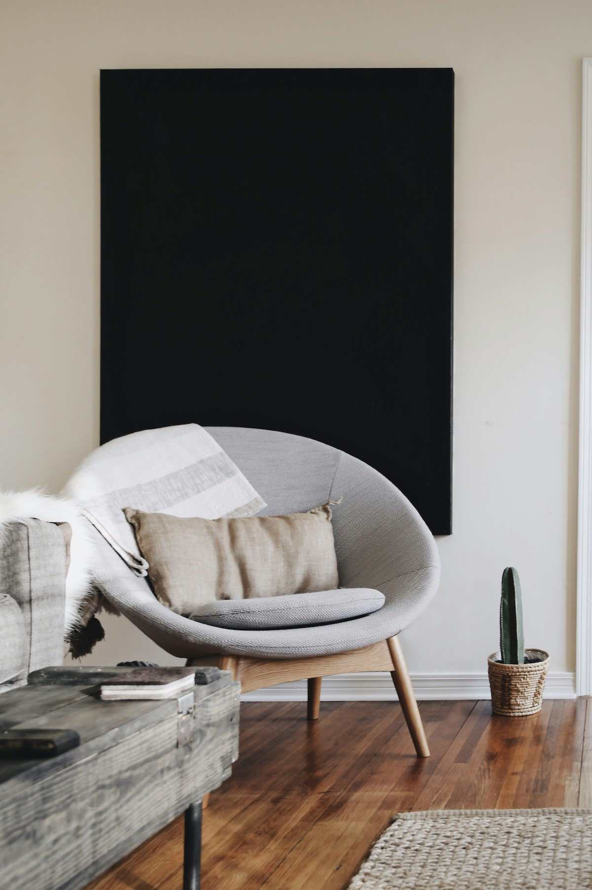
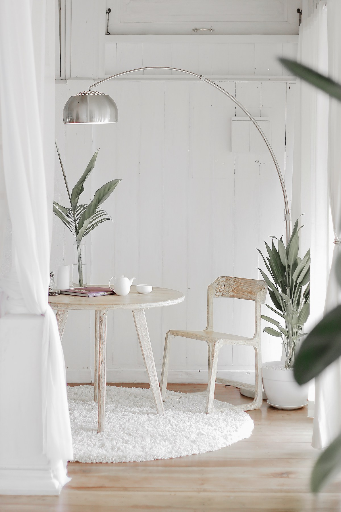
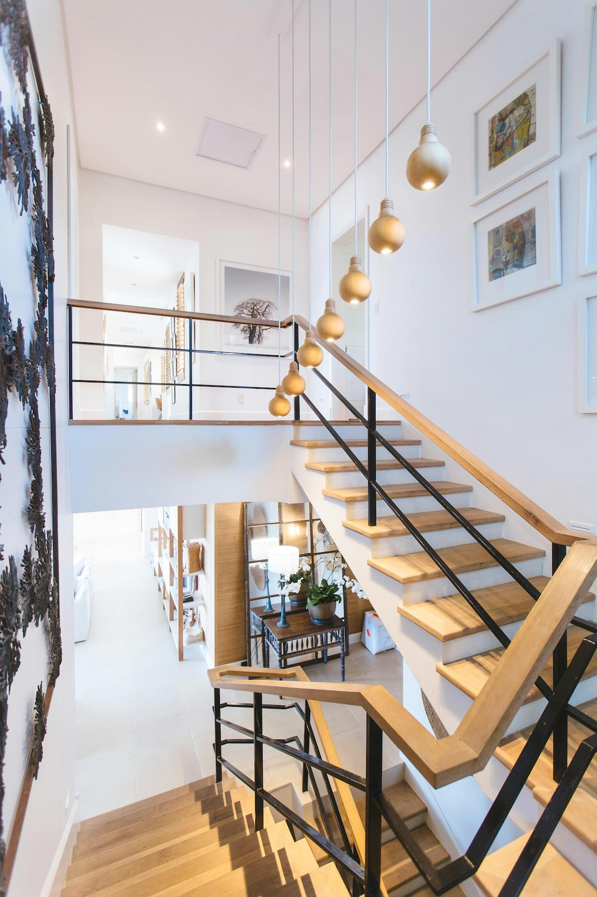
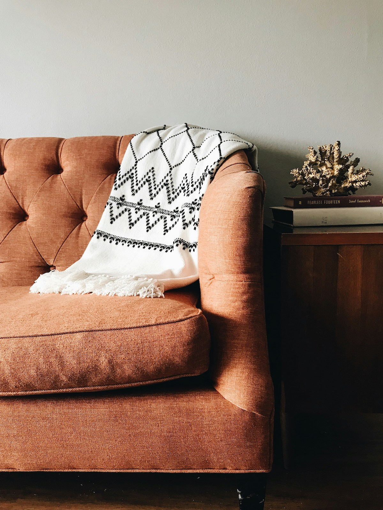
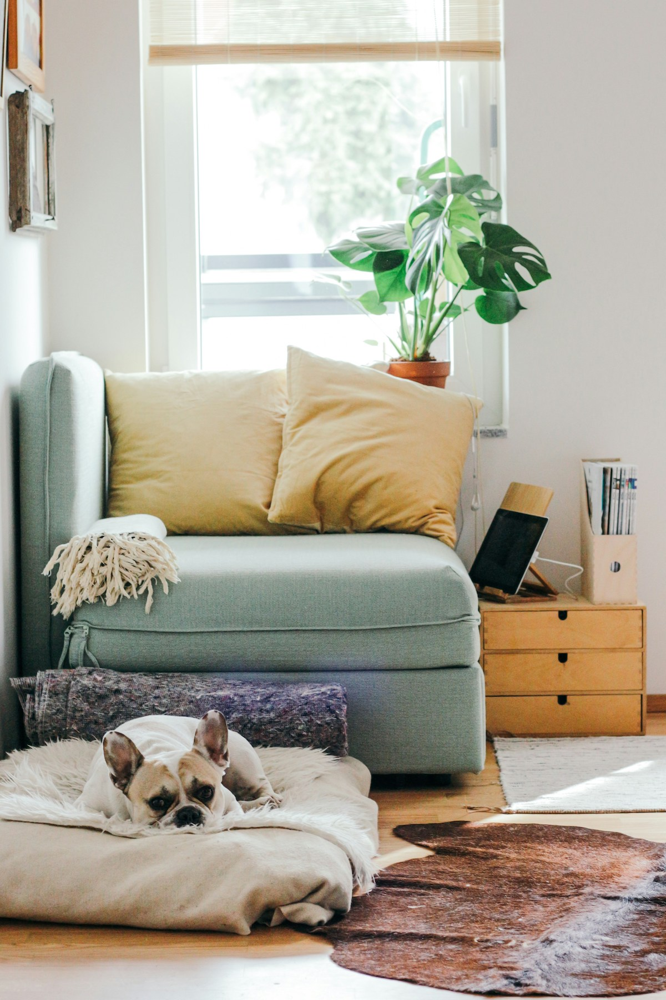
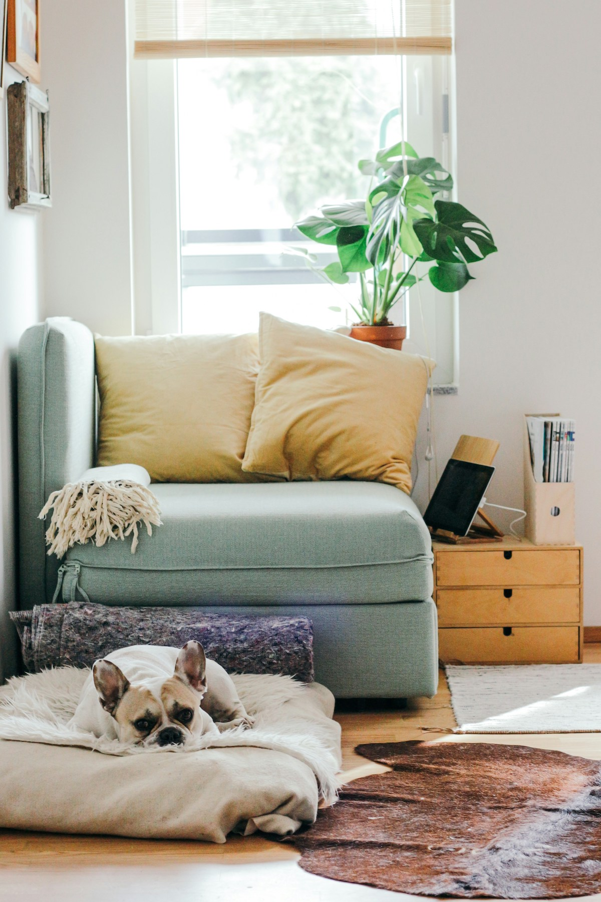
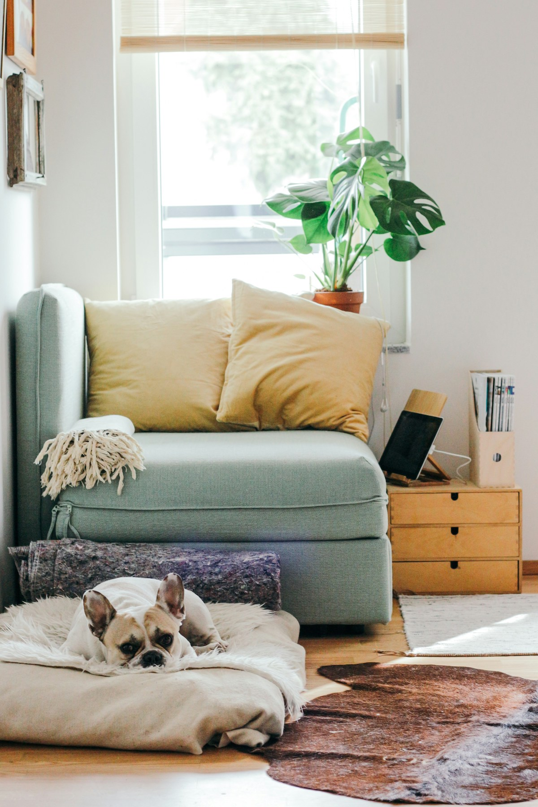

Planning Your Living Layout
Determine the Focal Point, Create Zones, and Traffic Flow
Use neutral colors (white, beige, gray) for walls and large
furniture to create a timeless look.
Add pops of color with throw pillows, rugs, and decor. Consider the
60-30-10 rule: 60% dominant color, 30% secondary color, 10% accent
color.
Overhead fixtures like chandeliers or ceiling lights provide overall
illumination.
Classic and durable, adds warmth and elegance.
Simple and modern, available in various styles like Roman, roller,
and cellular shades.




 

